MuK AI Assistant
Native AI Chat & Agent Runtime for Odoo
MuK IT GmbH - www.mukit.at
Community
Enterprise
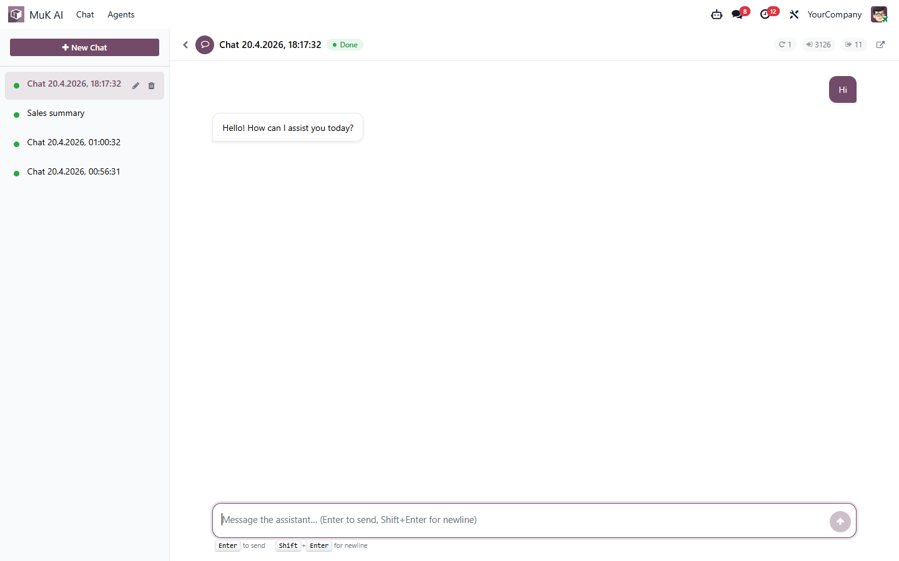

A complete agentic AI assistant inside Odoo. MuK AI
ships a native OWL chat client, a session-based agent runtime, and
three first-class LLM providers (OpenAI,
Anthropic, Google Gemini) with live
token and reasoning streaming. The assistant talks to your data through
the same muk_mcp tool registry your external AI clients
already use — one source of truth, one permission model, one
audit trail.
Includes human-in-the-loop ask_user support, a
session-scoped approval gate for risky writes, per-agent tool
filters, read-only scope enforcement, multimodal attachments
(images, PDFs, text files), lazy tool loading with a per-agent
essentials list, agent suggestion prompts, field history
versioning, and a prebuilt catalog of current GPT-5.x /
Claude 4.x–5 / Gemini 2.5–3.x models with input,
output and cache (read + write) pricing and per-model
reasoning-effort tiers.
MuK AI is also the foundation for the rest of the MuK AI suite:
adding a new provider is a single-file drop-in via the providers
REGISTRY, and downstream add-ons plug extra tools,
agents and UI extensions onto the same runtime.
A full OWL-based chat action lives under MuK AI > Chat
(also reachable at /odoo/ai). Sessions auto-save to
the database, stream replies live via the Odoo bus, and render
tool calls inline as collapsible cards with live-filling arguments
so users always see what the model is about to run. Markdown
rendering covers headings, lists, tables, inline code, and fenced
code blocks with syntax highlighting. A systray icon surfaces
running sessions across the UI, and a floating chat window
(Discuss-style) lets users keep talking while navigating other
views.
Keyboard-first by design: Enter sends, Shift+Enter adds a newline, and a single Send/Stop toggle handles mid-stream cancellation. Auto-scroll pauses when the user scrolls up, so reading past replies is not interrupted by the next delta.

Chats pile up fast. Spaces are folders in the
sidebar: create one with the + next to
Spaces, then drag chats into it to file them and drag
them back out to loosen them again. Drag a space by its grip to
reorder the list. Each space carries a name, a Font Awesome
icon picked from a searchable grid, and an optional
default agent that is preselected for every
chat started inside it — so a “Finance” space
can always open with your read-only analyst. Everything is
editable from the chat itself, no backend menu required.
Unread chats are counted per space; click the badge to narrow a
space to just its unread conversations. Modules can also ship
system spaces whose membership is derived from
a stored domain instead of manual filing —
muk_ai_schedule ships a Scheduled space
that collects every chat started by a schedule. One record
serves the whole database: nothing is duplicated per user, and
new matching chats appear in it retroactively.
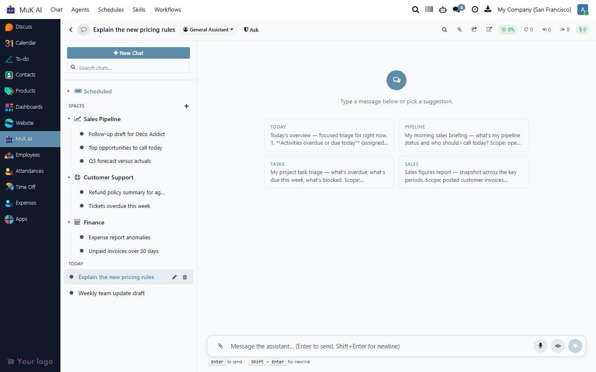
When the underlying model exposes a reasoning channel (OpenAI o-series and GPT-5 family, Anthropic Opus 4.x and Sonnet 4.x with extended or adaptive thinking), the chat replaces the static “Thinking…” placeholder with the model's latest reasoning sentence as it streams. The line rotates as new thoughts arrive and disappears the moment the answer text starts — you see what the agent is currently working through, never a stale block of text. Models without a reasoning channel (Gemini, GPT-4 family, Haiku) keep the original animated dots fallback automatically.
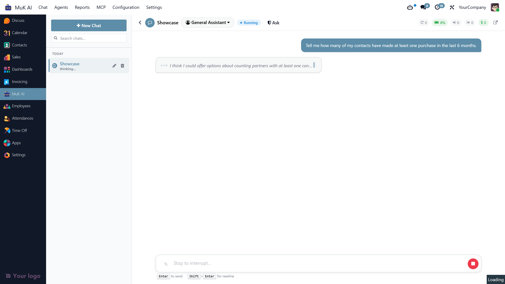
Answers stay grounded in your data. Whenever the assistant
reads records to build a reply, the records it relied on are
collected as sources and surfaced as a
compact chip under the message — expand it to see each
cited record with its model and a one-click link that opens
the record in Odoo. The same list is mirrored in the
Artifacts side rail alongside the turn's
attachments, so it is always clear where a number or
a claim came from — no more guessing whether the model
invented a figure or pulled it from an actual
sale.order.
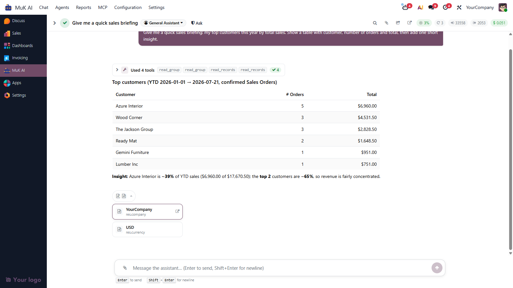
Dial how hard a model thinks before it answers. Each agent
carries a Reasoning Effort setting —
Minimal, Low, Medium,
High, Extra High or
Maximum — and only the tiers the chosen
model actually supports are offered; the field disappears
entirely for models with no thinking knob. The catalog stores
each model's supported efforts, so a request above what a model
allows is clamped to the nearest tier, and a provider that
still refuses is retried without the effort so the answer is
always served. Leave it on Model Default to let the
model decide.
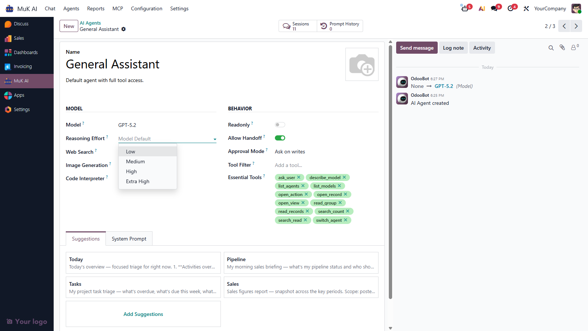
The provider layer is a thin Python registry plus stored
configuration records (muk_ai.provider). Each
provider class declares
name / label / default_model / default_url / supports_*,
implements headers() and request(), and
inherits shared HTTP + SSE streaming from
ProviderBase. Settings, default-model lookup,
capability probes, and dispatch are all derived from the same
REGISTRY — new providers ship as one Python
file and one mutate-line in the addon's
__init__.py, no fork of muk_ai
required.
| Provider | API surface | Streaming | Reasoning |
|---|---|---|---|
openai |
Responses API | SSE | Summary stream on o-series & GPT-5; encrypted carry for stateless mode |
anthropic |
Messages API | SSE | Extended thinking (legacy budget) and adaptive thinking (4.7+) |
google |
Gemini API | SSE | Falls back to the static thinking indicator |
The shipped catalog includes the current GPT-5.x family (5, 5.1, 5.2, 5.4 incl. Pro variants, 5.5 + Pro, 5.6), GPT-4.1 family, GPT-4o, the o-series; Claude Opus 4 / 4.1 / 4.5 / 4.6 / 4.7 / 4.8, Sonnet 4.x / 5, Haiku, Fable 5; Gemini 2.5 Pro/Flash/Flash-Lite/Flash-Image and the 3.x previews — each with context window and per-1M-token pricing for live cost display.
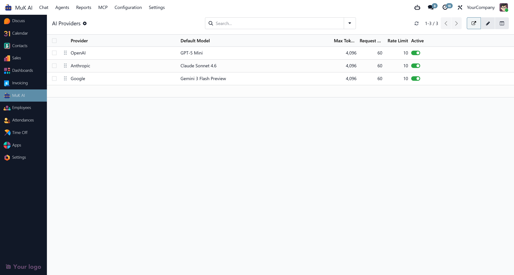
An Agent is a named preset: system prompt
(rendered with Odoo's inline-template engine for placeholders
like {{ user.name }} or {{ today }}),
model override, tool filter, an Essential Tools
list that controls which schemas ship eagerly (the rest stay
name-only and lazy-load on demand), native-tool toggles (web
search, image generation, code interpreter — auto-hidden
when the provider doesn't support them), read-only flag,
approval mode, and starter suggestion prompts. Every chat
session inherits from an agent — ship a "Sales Assistant"
with write access to leads alongside a "Read-only Analyst"
that cannot mutate anything. Read-only is enforced server-side
through the MCP scope check, not just by prompt instruction.
System prompts are versioned: every edit captures the previous body into a Prompt History revision so you can audit and roll back. Per-user rate limits throttle session creation, and record rules keep each user's sessions private (own-only for internal users, full access for system).
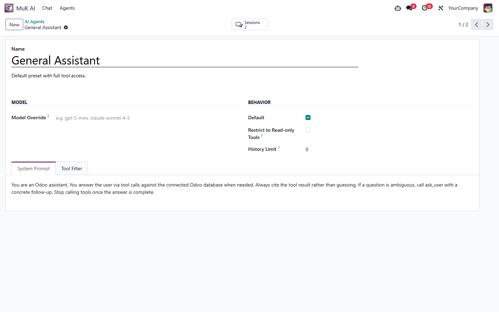
One chat can be served by several agents. Flip on
Allow Handoff to make an agent a delegation
target, and the built-in Router reads the
opening request, calls list_agents, and hands the
conversation to the best specialist with
switch_agent — from the next turn that
agent's prompt, tools and model take over the same
session (the switch is logged inline as an
A → B marker). Ship a “Sales
Assistant” with write access alongside a
“Read-only Analyst”, and let the Router pick.
Type /agent to switch yourself, or hand the whole
live chat to a colleague with the share button (or
/handover) — they get the session, an inbox
notification and an unread badge.
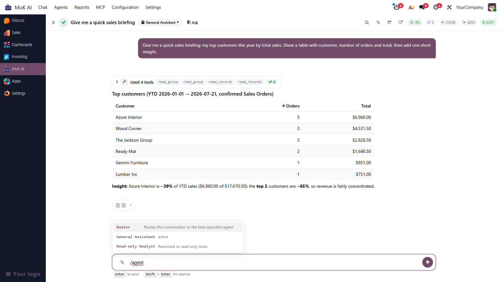
Risky write calls pause the session and ask before running.
An update to a mail-tracked field, a workflow method like
action_post on an invoice, a deletion, or a
create on a high-impact model triggers an approval card inline
in the chat. The card explains why it fired
("approving because state is tracked on
account.move"), shows the proposed JSON arguments,
and offers three buttons: Approve once,
Allow for Session (auto-approves matching
calls for the rest of this session only), and
Reject (returns a
rejected_by_user tool output so the model can
recover). Every decision is logged under Reports >
Approval Log with proposed vs. executed arguments.
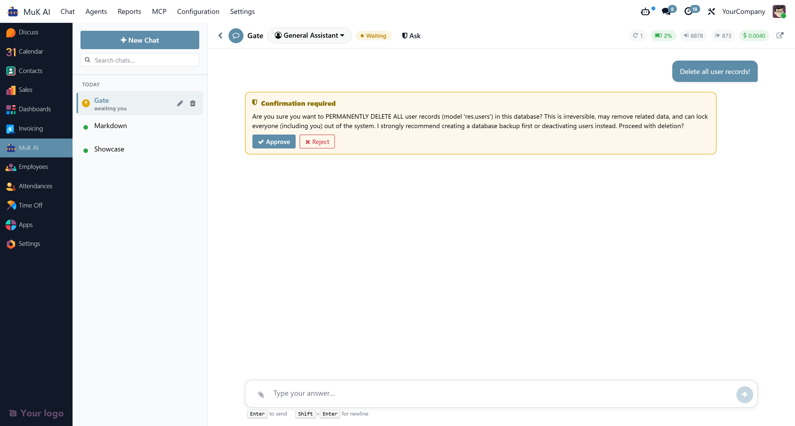
A floating chat window (Discuss-style) lets the assistant stay
reachable while users navigate other views. When open, the
session sticks to the Odoo view the user is looking at —
form record, list, kanban, pivot, graph — and a header
pill shows the pinned context (e.g.
sale.order · SO-00042) that opens that
view on click. Navigation fired by the agent
(open_record, open_view,
open_action) updates the pin automatically. The
context is injected at request time as a short
<ui_ctx> tag, so the model can resolve
references like "this order" or "the current list" without an
extra tool call. Type /unpin to clear it.
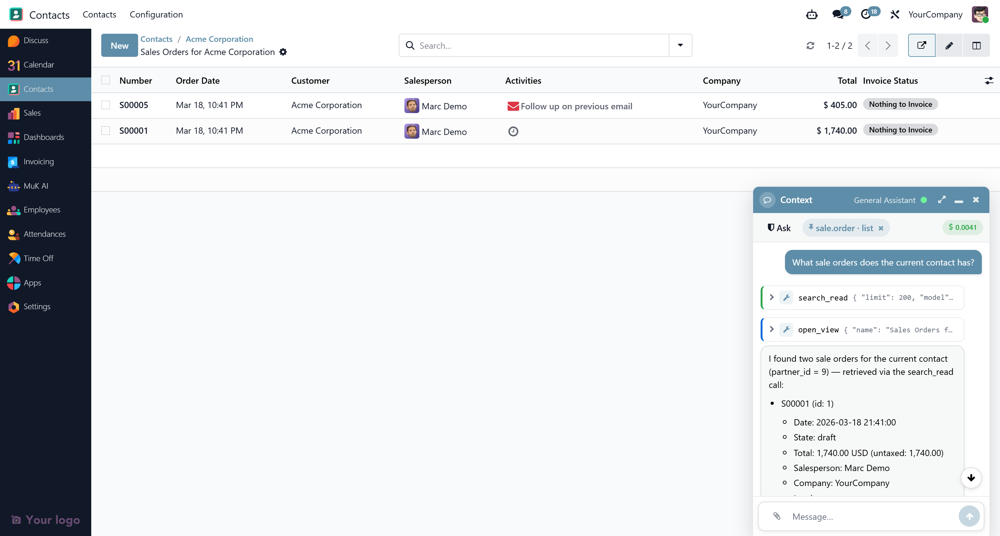
Ask the assistant to change the list, kanban, pivot or graph
you are looking at — “group these orders by
salesperson”, “only show drafts”,
“switch to a bar chart” — and it
reshapes that view in place instead of opening
a new one. The adjust_search tool is a
client tool: rather than running on the server it runs
in your browser tab and drives the live search view —
activating filters and group-bys (with
date_order:month-style intervals), applying field
searches and custom-domain facets, removing facets, switching
view type, and setting pivot/graph measures, chart mode,
ordering and stacking. It reports back exactly what it changed,
and — as in the shot below — will pause to check
with you first when a change would hide data.
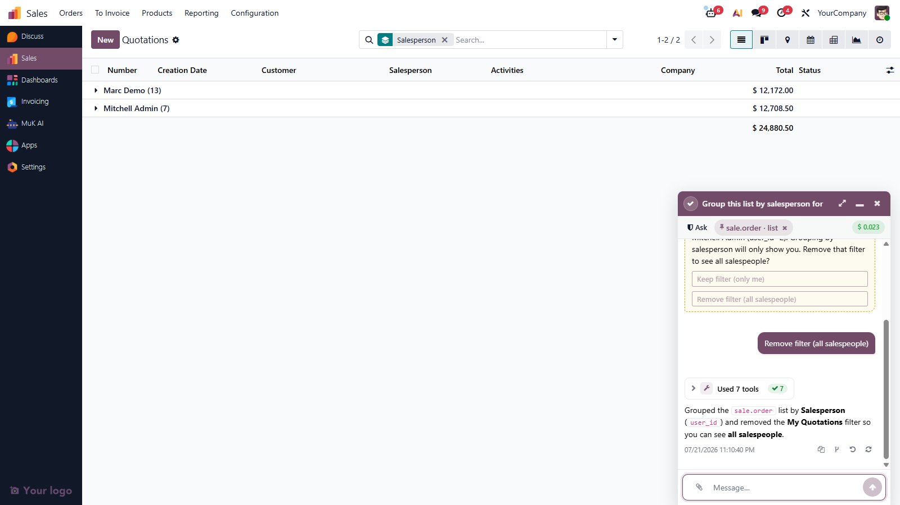
The transcript is fully in your hands:
Agents call exactly the same tool surface as your external MCP
clients — no duplicate catalog, no divergence. The MuK
AI agent registry pulls tools from muk_mcp
filtered by registry, and a handful of UI-specific tools
(open_record, open_view,
open_action, show_notification,
ask_user, the view-reshaping
adjust_search) are scoped to the in-Odoo agent. The
chat UI auto-dispatches any returned ir.actions.*
descriptor, so the model can navigate the user through the UI
as part of a reply.
When the LLM calls ask_user the session pauses in
waiting state and surfaces the question in the chat.
The user's answer is fed back as a
function_call_output so the model resumes the
turn exactly where it left off. Beyond the UI tools, a built-in
web_fetch tool reads a public web page as clean
Markdown (boilerplate stripped, links kept) behind an SSRF
guard that re-validates every redirect, and the fetched page
joins the reply's Sources as a citable web link.
Shipping every MCP tool's JSON schema in the
tools array of every turn is expensive on
context. Each agent declares a small
Essential Tools set that loads eagerly;
every other catalog tool is advertised by name only inside an
<available_tools> block appended to the
system prompt. The model fetches full schemas on demand
through a built-in meta-tool:
tool_load(names=[...]) — pulls one or
more schemas from the catalog. The names are appended to
the session's loaded-tools list and stay available for the
rest of the session.
tool_load(names=[...], call={name, arguments})
— load and execute one of the just-loaded
tools in the same round-trip; the schemas plus the inline
tool result come back in a single
function_call_output, no follow-up turn needed.
Preferred shape for one-shot lookups.
Unknown names come back under an unknown key so
the model can recover gracefully. ask_user is
auto-injected when approvals are on, regardless of the
essentials list. Leaving Essential Tools
empty enables the default lazy mode (read-side primitives + UI
helpers + ask_user); populate it to override.
Alongside the agent's system prompt and
<available_tools> list, each session
injects a short <runtime> block stating the
current Odoo version, today's date, the user (id, timezone),
the company (id), the active approval mode, and — when
relevant — the list of companies the user can access
with a hint to pass allowed_company_ids for
cross-company searches. The model never has to spend a turn
calling whoami or asking for the date to ground
its first reply.
Drop a file onto the composer, paste a screenshot, or click
the clip icon. Images render inline, PDFs and text files show
as pills. On send, every attachment is streamed to the active
provider as a native content block —
input_image / input_file for OpenAI
Responses, image / document blocks
for Anthropic Messages, inline base64 for Gemini, inline text
for small .txt / .csv /
.md files. Accepted: PNG, JPEG, WebP, GIF, PDF,
plain text, CSV, Markdown. Capped at 128 MiB per file with
oversize and unknown-type uploads rejected server-side.
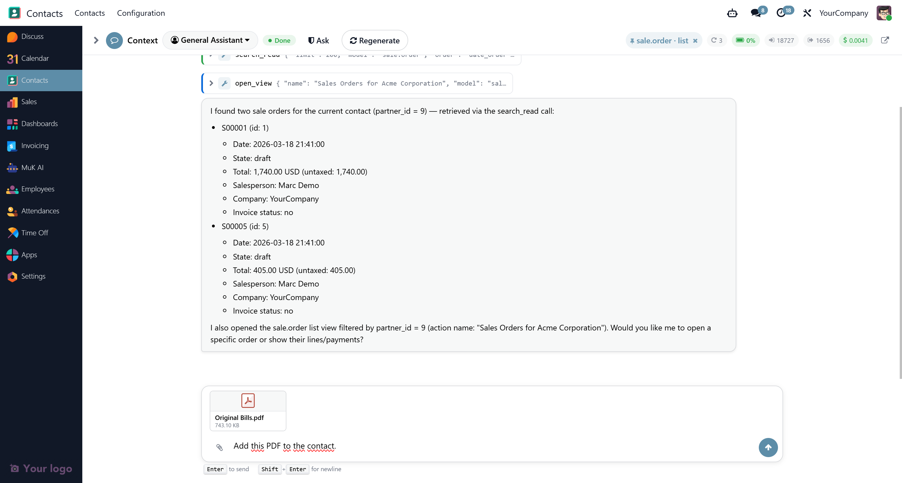
The chat header shows a colour-coded pill with the share of the
current model's context window consumed by the last turn's
input. Below 85 % is idle, 85–95 % flags a warning and
offers to auto-compact, 95 %+ triggers auto-compaction
silently — the conversation is replaced by a
≤500-token summary so the session can keep going without
losing continuity. Context sizes come from the
muk_ai.model record for the agent's active model.
Start a message with / to open a popover of
available commands: /help,
/clear (wipe conversation, keep agent),
/compact (manual compaction),
/unpin (clear view-context pin),
/agent (switch the active agent), and
/handover (transfer the chat to another user).
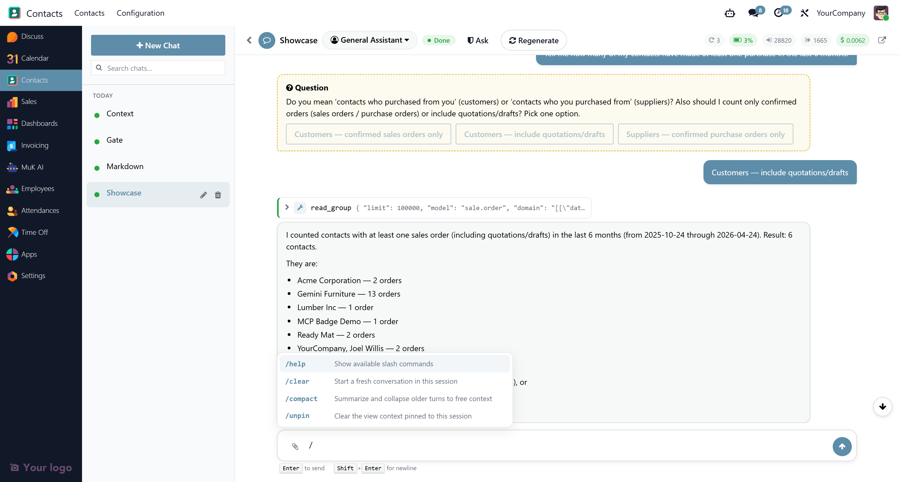
Replies stream over the Odoo bus as they arrive from the
provider. Each session inherits
bus.listener.mixin and routes events through the
owner's partner channel — not a guessable
string — so sessions cannot be eavesdropped by other
authenticated users. Text is delivered as
text_delta events; reasoning summaries as
reasoning_delta; tool calls stream as
tool_call_start + tool_call_args_delta
so the chat UI shows the tool card with live-filling arguments
before the tool even fires.
A per-stream idle watchdog aborts dead connections and marks
the session as errored. Runaway loops are capped per turn,
and the ask_user-at-cap edge is handled
gracefully so resumed sessions do not get stuck.
Internal User opens the chat and manages
their own sessions; System manages every
session, edits agents and providers, reviews approvals and
tool logs. Record rules scope sessions to their owner.
open_action honours per-action
groups_id so the model cannot hand a user a
descriptor they would not be allowed to reach through the
menu.
Every session carries an audit-ready tool log: user messages,
tool calls, tool results, assistant text, ask_user prompts,
answers, approval decisions — all JSON-serialised.
Combined with muk_mcp's own log, any AI-driven
write on your data is traceable end to end.
Two one-line defaults under Settings > General Settings > MuK AI: Default Provider (falls back to the first active provider when an agent doesn't pin one) and Default Agent (used for new chat sessions when the user hasn't picked one). Everything else is configured per-record on the provider, model, and agent forms. A Test Connection button on the provider form sends a tiny probe and reports success or failure without leaving the page. The same page holds the runtime guard-rails — Iteration Limit (rounds per slice), Turn Runtime and Slice Runtime wall-clock budgets, and a per-turn Cost Limit — and lists the installable MuK AI extensions (MCP, Compatible Providers, Mistral, Schedule, Skills, Voice, Workflows) as one-click toggles.
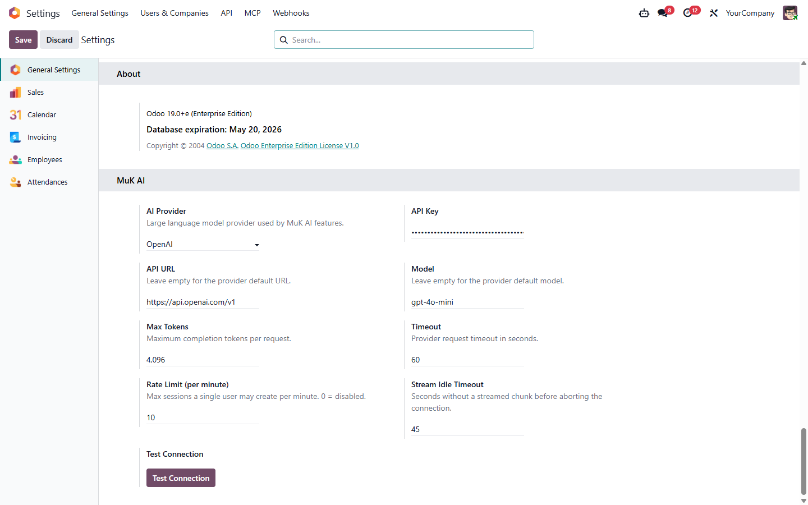
Are you having troubles with your Odoo integration? Or do you feel
your system lacks of essential features?
If your answer is YES
to one of the above questions, feel free to contact us at anytime
with your inquiry.
We are looking forward to discuss your
needs and plan the next steps with you.


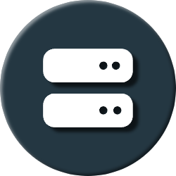